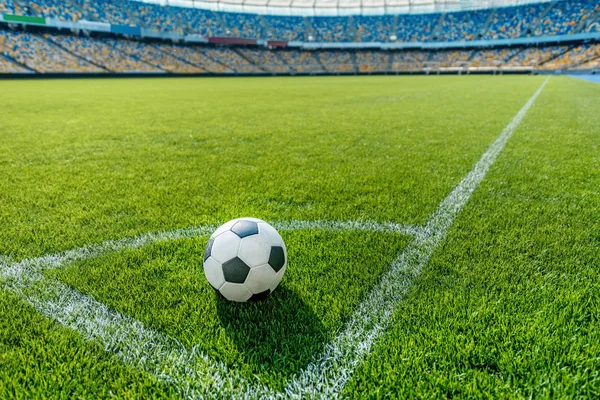

Чому саме футбол?
Футбол — це найпопулярніший вид спорту у світі, який об'єднує мільйони людей незалежно від віку чи країни проживання. Для мене це не просто хобі, а справжня пристрасть, яка вчить командній роботі, дисципліні та витривалості.
Кожен матч — це унікальна історія, сповнена драйву, емоцій та непередбачуваних моментів. Граючи у футбол, ви не лише підтримуєте чудову фізичну форму, а й знаходите вірних друзів.
Дізнатися більше про історію та правила гри можна на сторінці Вікіпедії про футбол.
Що потрібно для гри та мої улюблені клуби
Необхідне екіпірування:
- пляшка з водою
- бутси
- Спортивна форма (шорти та футболка)
- щитки та гетри
- рушник
Топ-3 моїх улюблених футбольних клубів:
- Барселона
- Ліверпуль
- Шахтар
Порівняння позицій гравців на полі
| Позиція | Головне завдання | Ключова навичка |
|---|---|---|
| Воротар | Захист воріт від голів | Реакція та гра руками |
| Захисник | Відбір м'яча у суперника | Сила та бачення поля |
| Півзахисник | Організація атак і допомога захисту | Пас та витривалість |
| Нападник | Забивання голів у ворота суперника | Швидкість та точність удару |
Галерея мого хобі
ХІТ